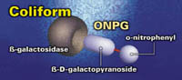
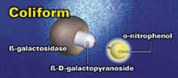

沪公网安备 31011202012026号
沪公网安备 31011202012026号
Colilert®250 检测可在 24 小时内得到一份
250 mL 样品的大肠菌群／大肠埃希氏菌的检测结果。
英文品名：Colilert®250
中文品名：无
制 造 商：IDEXX
产 地：美国
检测水样：瓶装水
检测对象：总大肠菌群、耐热大肠菌、
大肠埃希氏菌
检测内容：定性检测、定量检测
检测体积：250ml
检测时间：24小时
货号：98-26017-00
规格：100个/盒
保存条件：2℃~30℃
有效期：12个月
使用方法
合格证下载
原理
Colilert 250 利用专利技术固定底物技术酶底物法® (DST®) 可同时检测总大肠菌群和大肠杆菌。 Colilert 采用 ONPG 和 MUG 两种营养指示剂，这两种试剂分别可以被大肠菌群的 β-半乳糖苷酶和大肠杆菌的 β-葡糖醛酸酶分解代谢。
当大肠菌群在 Colilert 250 中生长时，其使用 β-半乳糖苷酶分解代谢 ONPG，并使样品从无色变为黄色。

大肠杆菌使用 β-葡糖醛酸酶分解代谢 MUG 时，能够发出荧光。 因为绝大多数的非大肠菌群杂菌不产生这些酶，所以杂菌不能生长和产生干扰。


少量的能产生这些酶的非大肠菌群的杂菌也会被 Colilert 250 的特殊配方的抑菌剂选择性抑制。
这种培养基和传统的培养基不同，传统的培养基提供了丰富的营养环境，可以同时支持目标微生物和非目标微生物的生长。 当非目标微生物生长并模仿目标微生物时，此时就产生了假阳性。 传统培养基中非目标微生物的生长还可以抑制目标微生物，这就导致假阴性的出现。 为了抑制非目标微生物，传统培养基通常加入高浓度的盐、洗涤剂或其他选择性的试剂——这些试剂可能会无意地抑制目标微生物，进而产生假阴性。
优势
1. 简单
操作便捷，简单培训。
单剂量包装，无需配置培养基。
无需由于滤膜堵塞及异养菌干扰导致的重复检测。
质控 (QC) 步骤可在 15 分钟内完成。
2. 快速
手工操作时间小于 1 分钟。
24 小时内同时检测大肠菌群和大肠埃希氏菌。
无需清洗玻璃器皿或菌落计数。
3. 准确
特异性检测大肠杆菌，排除不必要的公认非目标微生物干扰。
每 250 ml 水样中可抑制 500 万个异养杂菌。
排除传统方法中的主观解释。
每个样品可检测 1 个大肠菌群或耐热大肠菌或大肠埃希氏菌。
4. 独特
专门用于饮料生产企业对总大肠菌群、耐热大肠菌和大肠埃希氏菌的检测。
5. 经济
能有效减少晚上和周末加班工作。
2–30°C下可保存 12 个月。
文献资料
技术文献下载
2-Colilert250与ISO9380-12000(E)滤膜法比较（英文版-2011年）
3-科立得,Colilert-18,Colisure,51孔、97孔定量盘及SimPlate通过加拿大安大略省用于检测饮用水认证（英文版-2008年）
4-方法9221A-C多管发酵法、方法9221D及方法9221E检测粪大肠菌群方法比较（英文版-1998年）
5-水与废水标准检测方法第21版通过科立得,Colisure,Colilert-18,51及97孔定量盘（英文版-2005年）